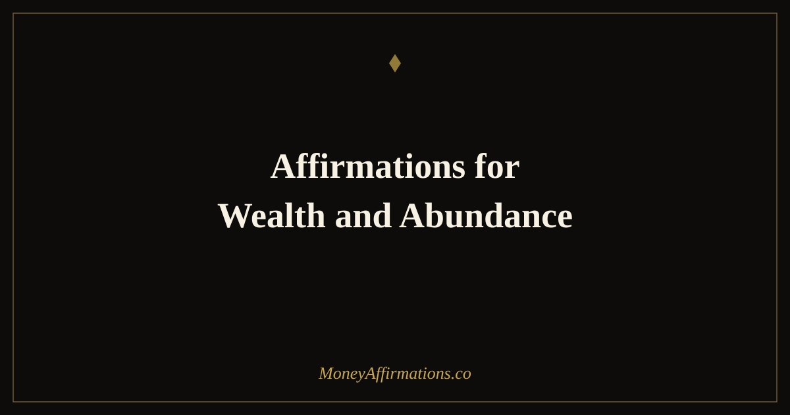

Affirmations for Wealth and Abundance: 35 Statements to Attract Both

Wealth and abundance are related but not identical. Wealth is the accumulation — the assets, the investments, the net worth that reflects years of disciplined financial behaviour. Abundance is the orientation — the internal state of someone who genuinely believes that more than enough exists, that it flows toward them, and that receiving it is natural and right. The most financially successful people carry both: the practical discipline to build wealth and the abundance mindset that makes building it feel natural rather than effortful or forbidden.
These 35 affirmations for wealth and abundance are designed to build both simultaneously. They address the practical beliefs that support wealth-building — consistency, discipline, strategic thinking — and the experiential beliefs that support an abundance orientation: openness to receiving, freedom from scarcity thinking, and the deep conviction that there is enough for you and for everyone. Used together as a daily practice, they create the complete internal environment from which lasting wealth grows.
What are affirmations for wealth and abundance?
Affirmations for wealth and abundance are present-tense statements that align your beliefs with two reinforcing dimensions of financial prosperity. Wealth affirmations target the practical self-concept of someone who builds, manages, and grows financial assets. Abundance affirmations target the experiential self-concept of someone who lives in a state of genuine plenty — open to receiving, free from scarcity, and secure in the belief that financial good things flow toward them consistently.
Used together, these two dimensions cover the full psychology of financial prosperity. The wealth affirmations collection and the abundance affirmations collection provide the deeper resources that complement this combined practice.
35 affirmations for wealth and abundance
- I am wealthy and abundant — in financial assets, in opportunity, and in the deep sense of having more than enough.
- Wealth flows to me because I am disciplined, intentional, and completely open to receiving it.
- I live in a state of abundance and my financial assets reflect that abundance increasingly every year.
- I build wealth steadily through consistent saving, smart investing, and the income I grow deliberately.
- Abundance is not a future state I am hoping for — it is my current orientation and daily experience.
- My wealth grows because I make excellent decisions, take consistent action, and believe completely in the outcome.
- I attract financial abundance from every direction — employment, business, investment, and unexpected sources.
- I am a person of genuine wealth and I manage it with gratitude, skill, and long-term intention.
- The universe is abundant and I claim my portion of that abundance with confidence and gratitude.
- My financial assets grow quietly in the background, building the security and freedom I deserve.
- I release every belief that wealth is scarce, difficult, or meant for others — it is available to me now.
- Abundance thinking shapes every financial decision I make — I see opportunity where others see risk.
- I earn generously, save consistently, invest wisely, and give freely — this is my financial identity.
- My wealth and my sense of abundance grow together, each reinforcing the other in a continuous upward cycle.
- I am grateful for every expression of financial abundance in my life, from the smallest to the largest.
- Wealth is not complicated — I save more than I spend, I invest the difference, and I grow my income. I do all of this.
- I am abundant — not because of what I have, but because of how I think about what I have and what is coming.
- My net worth increases every year because wealth-building is a consistent part of who I am.
- I am open to wealth arriving in forms I have not yet imagined — and I am ready to receive it when it does.
- Abundance is my natural state and I return to it quickly whenever fear or scarcity thoughts try to pull me away.
- I build wealth that serves my life, my family, and causes beyond myself — this is what motivates my financial discipline.
- Money is abundant in this world and there is more than enough for me to build the financial life I envision.
- I am a steward of wealth — I receive it, grow it, protect it, and use it with wisdom and integrity.
- Financial abundance is not selfish — it is the result of providing value and allowing yourself to receive its return.
- I hold an abundance mindset in every financial conversation, every negotiation, and every investment decision.
- My relationship with money is one of mutual respect — I treat it well and it multiplies in my care.
- I am building generational wealth — the kind that outlasts me and creates opportunities for those I love.
- The more abundant my mindset, the more abundant my actions, and the more abundant my financial results.
- I welcome wealth into every area of my life and I hold it with a light, grateful, and expansive hand.
- My income grows because I believe I deserve more and I take the actions that make more possible.
- Wealth and abundance are my birthright — I claim them fully and I build them deliberately every single day.
- I invest in assets that grow my wealth quietly and consistently, month after month, year after year.
- I experience financial abundance as my everyday reality, not as a distant goal or occasional blessing.
- My financial life reflects my beliefs — and my beliefs are firmly, unshakeably rooted in wealth and abundance.
- I am wealthy, I am abundant, and every day I become more of both.
How to use these affirmations
The most effective way to use affirmations for wealth and abundance is in a dual-layer morning practice: begin with three abundance-oriented statements that open you to receiving (affirmations 1–10 and 20, 25, 28–31), then follow with three wealth-building statements that reinforce practical financial identity (affirmations 6–9, 12–13, 16, 22, 27, 32–34). This sequence mirrors the two-part internal architecture these affirmations are designed to build: first the openness, then the discipline.
Beyond the morning, return to this list at the specific moments that most commonly trigger scarcity thinking in your financial life. When reviewing a large expense, negotiating a salary, or experiencing financial anxiety — two or three spoken affirmations from this list will interrupt the scarcity reflex and restore the abundance orientation. Over time, this becomes automatic: the wealthy, abundant self-concept becomes your default state rather than a conscious effort.
Why the wealth-abundance combination produces faster results than either alone
Financial psychology research distinguishes between two categories of money belief: scarcity beliefs (which suppress wealth-building behaviour) and efficacy beliefs (which enable it). Abundance affirmations primarily address scarcity beliefs — the conviction that there is not enough, that money is hard, that receiving it is complicated. Wealth affirmations primarily address efficacy beliefs — the conviction that you are capable of building, managing, and growing financial assets.
Using both together produces results faster than either alone because they address different roots of the same problem. A person who has released scarcity but lacks efficacy will feel open to wealth but not act toward it. A person who has built efficacy but still carries scarcity thinking will act toward wealth but sabotage it through under-charging, over-spending, or refusing to receive. The combination — open hands and a skilled mind — creates the complete internal environment in which wealth-building becomes both natural and sustainable.
Tips to make them work faster
- Use abundance statements first, wealth statements second. The sequence matters — openness creates the receptive state; efficacy beliefs then give that openness direction and practical power.
- Identify your primary block: scarcity or efficacy. If you feel unworthy of wealth, focus on the abundance statements. If you feel incapable of building it, focus on the wealth statements. Targeted work produces faster results.
- Act abundantly in small ways daily. Tip generously, give without keeping score, celebrate others' financial wins. The abundance mindset is strengthened by abundant behaviour, not just abundant thinking.
- Track both your net worth and your mindset monthly. Note the financial number and write one sentence about how your relationship with money has shifted. Both measures matter.
- Read biographies of people who built wealth from nothing. The affirmations build belief; real-world evidence confirms it. Stories of ordinary people who became wealthy remind your brain that the affirmations describe a real and achievable trajectory.
Frequently Asked Questions
What is the difference between wealth and abundance?
Wealth typically refers to accumulated financial assets — money, investments, property, and the net worth they represent. Abundance is the broader state of having more than enough across all dimensions of life — financial, relational, experiential, and energetic. You can be wealthy without feeling abundant (living in financial scarcity despite large assets) or you can cultivate an abundance mindset before wealth arrives (which is often the prerequisite for building it). Affirmations for wealth and abundance work on both simultaneously, building the material and the experiential dimensions of financial prosperity together.
Do I need to already have wealth to use wealth and abundance affirmations?
No — and in fact, this is exactly backwards. The identity of a wealthy, abundant person precedes the material conditions of wealth; it does not follow from them. Building the mindset of someone who is wealthy and abundant — through daily affirmation, through deliberate financial choices, through changing how you talk and think about money — creates the psychological conditions from which wealth-building behaviour emerges. You begin the affirmations from wherever you are, and they work by shifting your orientation toward wealth and abundance at the level of identity and automatic thought.
How do affirmations for wealth and abundance work alongside financial planning?
Affirmations and financial planning are complementary, not competing, tools. Financial planning gives you the map — the specific strategies, savings rates, investment choices that build wealth. Affirmations ensure that your psychology supports rather than undermines the execution of that plan. Many people have excellent financial plans they cannot consistently follow because limiting beliefs about money, worthiness, or capacity create constant friction. Affirmations for wealth and abundance reduce that internal friction, making it easier to do the saving, investing, and earning behaviour that the plan requires.
Wealth and abundance reinforce each other — and building both starts with the beliefs you choose to hold every day. Explore the complete wealth affirmations collection for the full framework that makes financial prosperity your natural and consistent state.